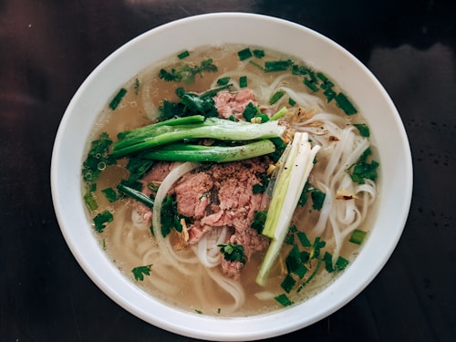
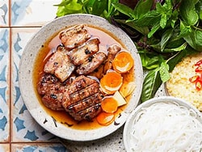
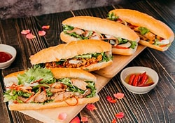

A Paradise for Food Lovers
Hanoi is world-famous for its rich, flavorful, and affordable street food culture. Every corner of the Old Quarter offers a unique taste that reflects centuries of culinary tradition.
Top 3 Must-Try Dishes in Hanoi:
- Phở (Beef or Chicken Noodle Soup): The iconic Vietnamese dish featuring a delicate, aromatic broth and tender noodles.
- Bún Chả (Grilled Pork with Noodles): Tender charcoal-grilled pork served in a warm, tangy dipping sauce with fresh herbs.
- Bánh Mì (Vietnamese Baguette): A crispy baguette packed with savory pâté, assorted meats, pickled vegetables, and fresh cilantro.
Visual Highlights of Hanoi Cuisine:



Discover More Recipes and Food Guides:
To dive deeper into the local food scene and find the best hidden food stalls, check out the Official Vietnam Tourism Culinary Guide.